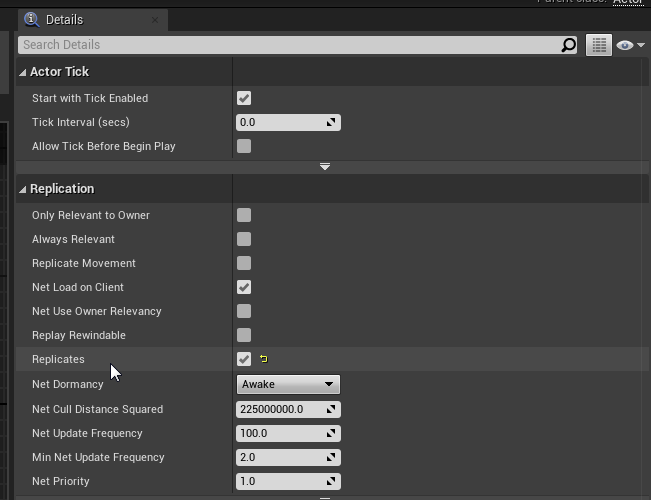
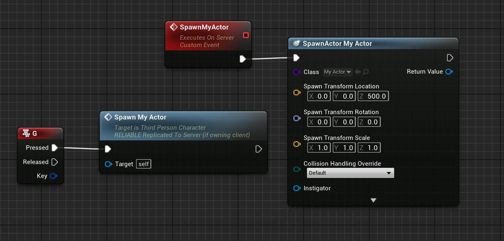
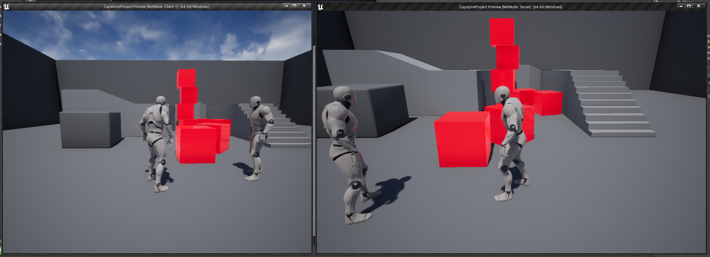

Replicating Actors
Replicating an actor in Unreal Engine is luckily pretty straightforward.
If we are to take an actor that we want to have replication enabled for, you can simply open up the editor for the actor, and in the details panel enable "replicates", as shown here:

It will be located near the top of the details, and we can leave everything else default for now.
It is important to note that if an actor is set to not replicate at all, even if you were to run a multicast or any form of replicated code inside the actor, it will not replicate unless you enable "replicates" in the actor details.
From here the replication is pretty straightforward. One thing to keep in mind is that unless specified otherwise, actors will be owned by the server meaning all replicated logic must be handled by the server.
One very neat thing about setting an actor to replicate, is that actors spawned on the server will automatically replicate over to clients. Here is an example of something we can do:

In this example I have an actor that is just a red cube, and when the user presses G it will tell the server to spawn one near the center of the world.
However because the actor is set to be replicated, this will automatically replicate and here is what this looks like in practice:

When either of the users presses G, we can get many of the cubes to spawn for both players. If the cube was set to not replicate it would only appear on the server.
However there is one problem still, and it is that the replicated cubes simulate physics and can be pushed around, but the physics aren't replicated meaning their positions will desync when pushed around.
Continue to the next page to learn about movement and physics replication!